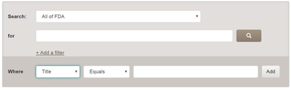
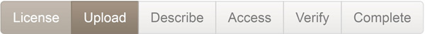
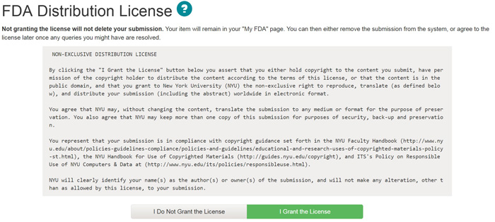
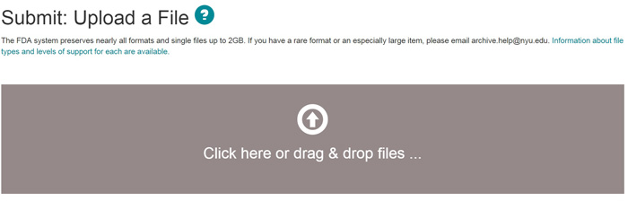
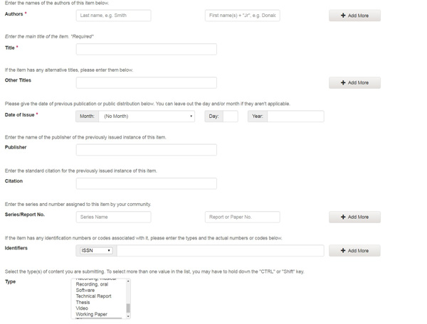
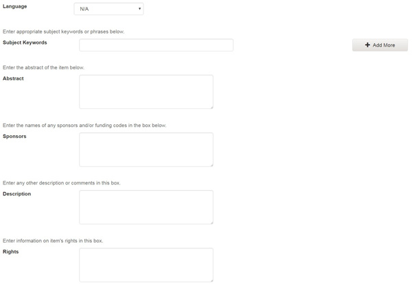
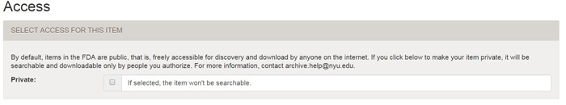
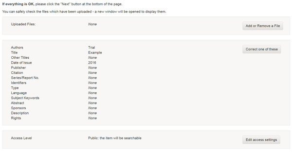
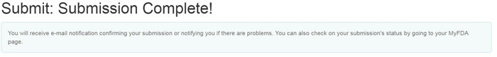

For more information on the Faculty Digital Archive, to request space for your materials, or for help with an existing collection, visit our Service Link documentation or e-mail queries to archive.help@nyu.edu
Help Contents: |
The Faculty Digital Archive (FDA) is powered by DSpace, a software that captures, distributes and preserves digital research products. Here you can find articles, working papers, preprints, technical reports, conference papers and data sets in various digital formats. Content grows daily as new communities and collections are added to the FDA.
The FDA content is organized around Communities which can correspond to administrative entities such as schools, departments, labs and research centers. Within each community there can be an unlimited number subcommunities and an unlimited number of collections. Each collection may contain an unlimited number of items.
| BROWSE | top |
Browse allows you to go through a list of items in some specified order:
Browse by Communities and Collections takes you through the communities in alphabetical order and allows you to see the subcommunities and collections within each community. NYU schools and colleges are represented by top-level Communities, in which faculty work is organized into Collections.
Browse by Issue Date allows you to move through a list of all items in the FDA in reverse chronological order (most recent first).
Browse by Author allows you to move through an alphabetical list of all authors of items in the FDA.
Browse by Title allows you to move through an alphabetical list of all titles of items in the FDA.
Browse by Subject allows you to move through an alphabetical list of subjects assigned to items in the FDA.
You may sign on to the system if you wish to:
| SEARCH | top |
To search all of the FDA, use the the Search option on the top right corner or the search box in the middle of the home page.
To limit your search to a specific community or collection, navigate to that community or collection and use the search bar on that page.
The FDA uses the Solr/Lucene search engine. Here are some search hints:
The word(s) you enter in the search box will be searched against each item’s descriptive metadata (including title, author, subject, series, etc.). Additionally, the word(s) you enter will also be searched across the full text of the item itself, if the item has been optimized for optical character recognition (OCR).
What is not searched - Stop Words
The search engine ignores certain words that occur frequently in English, but do not add value to the search. These are:"a", "and" , "are" , "as" , "at" , "be" , "but" , "by" , "for" , "if" , "in" , "into",
"is" ,"it" ,"no" , "not" , "of" , "on" , "or" , "such", "the" , "to" , "was"
Truncation
Use an asterisk (*) after a word stem to get all hits having words starting with that root, for example:For example: Select* will retrieve selects, selector, selectman, selecting.
Stemming
The search engine automatically expands words with common endings to include plurals, past tenses, etc.Phrase Searching
For example: "organizational change"
To search using multiple words as a phrase, put quotation marks (") around the phrase.Exact word match
Put a plus (+) sign before a word if it MUST appear in the search result. For instance, in the following search the word "training" is optional, but the word "dog" must be in the result.For example: +dog trainingEliminate items with unwanted words
Put a minus (-) sign before a word if it should not appear in the search results. Alternatively, you can use NOT. This can limit your search to eliminate unwanted hits.For example: In the searchtraining -cat or training NOT cat you will get items containing the word "training", except those that also contain the word "cat".Boolean searching
The following Boolean operators can be used to combine terms. Note that they must be CAPITALIZED!
AND - to limit searches to find items containing all words or phrases combined with this operator, e.g.
cats AND dogs will retrieve all items that contain BOTH the words "cats" and "dogs".OR - to enlarge searches to find items containing any of the words or phrases surrounding this operator
cats OR dogs will retrieve all items that contain EITHER the words "cats" or "dogs".Parentheses can be used in the search query to group search terms into sets, and operators can then be applied to the whole set. For example:
| ADVANCED SEARCH | top |
The advanced search page allows you to specify the fields you wish to search, and to combine these searches with the Boolean "and", "or" or "not".
You can restrict your search to a community by clicking on the arrow to the right of the top box. If you want your search to encompass all of the FDA, leave that box in the default position.
Enter the phrase you are searching for in the search box. You can further refine the search by specifying what the title, author, subject or date issued should equal, contain, not equal or not contain.

Note: You must use the input boxes in order. If you leave the first one blank your search will not work.
| COMMUNITIES | top |
Within each community there can be an unlimited number subcommunities and an unlimited number of collections. Subcommunities and collections correspond to administrative entities such as departments, labs, research centers, and individual researchers. FDA content lives at the collection level, and each collection may contain an unlimited number of items.
Each community has its own entry page displaying information, news and links reflecting the interests of that school/college, as well as a descriptive list of collections within the community.
For the FDA, the the hierarachy of structure is as follows -- NYU school or division --> Collection of faculty member/project --> Individual item.
| COLLECTIONS | top |
Communities can maintain an unlimited number of collections in the FDA. Collections can be organized around a topic, or by type of information (such as working papers or datasets) or by any other sorting method a community finds useful in organizing its digital items. Collections can have different policies and workflows.
Each FDA collection has its own entry page displaying information, news and links reflecting the interests of users of that collection.
| SUBMIT | top |
Stopping during the Submission Process:
At any point in the submission process you can stop and save your work for a later date by clicking on the "cancel/save" button at the bottom of the page. The data you have already entered will be stored until you come back to the submission, and you will be reminded on your "My FDA" page that you have a submission in process. If somehow you accidentally exit from the submit process, you can always resume from your "My FDA" page. You can also cancel your submission at any point.
Progress Bar - Buttons at Top of Page:
At the top of the submit pages you will find 6 rectangular buttons representing each step in the submission process. As you move through the process these buttons will change color. Once you have started you can also use these buttons to move back and forth within the submission process by clicking on them. You will not lose data by moving back and forth.

Select Collection:
Click on the arrow at the right of the drop-down box to see a list of Collections. Move your mouse to the collection into which you wish to add your item and click.
(If you are denied permission to submit to the collection you choose, please contact contact archive.help@nyu.edu for more information.)
You must be authorized by a community to submit items to a collection. If you would like to submit an item to the FDA, but don't see an appropriate community, please contact contact archive.help@nyu.edu to find out how you can get your community set up in FDA.
Click on the "Next" button to proceed, or "Cancel/Save" button to stop and save or cancel your submission.
| STEP 1: License | top of submit | top |
The FDA requires agreement to this non-exclusive distribution license before your item can appear in the Archive. Please read the license carefully. If you have any questions, please contact archive.help@nyu.edu.

There are two ways of uploading the file you want. You can either select the file using the 'Open' option or you can drag and drop the file into the upload window.

Click on the "next" button to proceed, or "cancel/save" button to stop and save or cancel your submission. You can also choose 'Skip File Upload' to add the file at a later time.
| STEP 3: Describe | top of submit | top |

The information you fill in on this screen will form the metadata record that will enable users to retrieve your item using search engines. The richer the metadata, the more "findable" your item will be, so please take the time to fill in as many fields as are applicable to your item. The Author, Title and Date of Issue (year) fields are mandatory.
Author:
This can be a person, organization or service responsible for creating or contributing to the content of the item. By clicking on the "Add More" button you can add as many authors as needed.
If the author is an organization, use the last name input box for the organization name.
Title:
Enter the full and proper name by which this item should be known. All FDA items must have a title!
Other Titles:If your item has a valid alternative title, for instance, a title in another language or an abbreviation, then enter it here.
Date of Issue:
If your item was previously published or made public, enter the date of that event here. If you don't know the month, leave the default "no month"; otherwise select a month from the drop-down box. If you don't know the exact day, leave that box empty.
Publisher:
Enter the name of the publisher of this item.
Citation:
Enter citation information
for this item if it was a journal article or part of a larger work, such as
a book chapter. For journal articles, include the journal title, volume
number, date and paging.
For book chapters, include the book title, place of publication, publisher
name, date and paging.
Series/Report No.:
Some of the collections in the FDA are numbered series such as technical reports or working papers. If this collection falls into that category, then there should be a default value in the Series Name box which you should not change, but you will have to fill in the assigned number in the Report or Paper No. input box.
Identifiers:
If you know of a unique number or code that identifies this item in some system, please enter it here. Click on the arrow to the right of the input box, and select from one of the choices in the drop down menu. The choices refer to:
Govt.doc # - Government Document Number - e.g. NASA SP 8084
DOI - Digital Object Identifier - e.g. 10.10.1038/nphys1170
ISBN - International Standard Book Number - e.g. 0-1234-5678-9
ISSN - International Standard Serial Number - e.g. 1234-5678
ISMN - International Standard Music Number - e.g. M-53001-001-3
URI - Universal Resource Identifier - e.g.. http://www.dspace.org/help/submit.html
Other - An unique identifier assigned to the item using a system other than the above
Type:
Select the type of work (or genre) that best fits your item. To select more than one value in the list, you may have to hold down the "ctrl" or "shift" key.

Language:
Select the language of the intellectual content of your item. If the default (English - United States) is not appropriate, click on the arrow on the right of the drop down box to see a list of languages commonly used for publications, e.g.
If your item is not a text document and language is not applicable as description, then select the N/A choice.
Subject Keywords:
Please enter as many subject keywords as are appropriate to describe this item, from the general to the specific. The more words you provide, the more likely it is that users will find this item in their searches. Use one input box for each subject word or phrase. You can get more input boxes by clicking on the "add more" button. Examples:
Your community may suggest the use of a specific vocabulary, taxonomy, or thesaurus. If this is the case, please select your subject words from that list.
Abstract:
You can either cut and paste an abstract into this box, or you can type in the abstract. There is no limit to the length of the abstract. We urge you to include an abstract for the convenience of end-users and to enhance search and retrieval capabilities.
Sponsors:
If your item is the product of sponsored research, you can provide information about the sponsor(s) here. This is a freeform field where you can enter any note you like.
Description:
Here you can enter any other information describing the item you are submitting or comments that may be of interest to users of the item.
Rights:
Here you can enter any information about the rights of the use of the item you are submitting.
Click on the "next" button to proceed, or "cancel/save" button to stop and save or cancel your submission.
| STEP 4: Access | top of submit | top |
On the Access page, check the box only if you want your item to be private. By default, all items in the FDA are public (and we strongly encourage this because it makes your work accessible to wider audience).

This page lets you review the information you have entered to describe the item. To correct or edit information, click on the corresponding button on the right, or use the buttons in the progress bar at the top of the page to move around the submission pages. When you are satisfied that the submission is in order, click on the "Next" button to continue.
Click on the "Cancel/Save" button to stop and save your data, or to cancel your submission.

| STEP 6: Complete | top of submit | top |
Now that your submission has been successfully entered into the FDA, it will go through the workflow process designated for the collection to which you are submitting. Some collections require the submission to go through editing or review steps, while others may immediately accept the submission. You will receive e-mail notification as soon as your item has become a part of the collection, or if for some reason there is a problem with your submission. If you have questions about the workflow procedures for a particular collection, please contact the community responsible for the collection directly. You can check on the status of your submission by going to the My FDA page.

| MODIFY | top |
Collection administrators have the ability to add content to, modify existing content in, and remove content from their collections.
Once you have submitted something to your collection, a FDA record is created for the uploaded file. That file and the descriptive information about it (the "metadata") are called an "item." An item in the FDA can have multiple digital files attached to it. For example, you may want to store a high-quality image file and a smaller, compressed derivative of it together as a single item.
To add a new file to an already-existing item in the FDA, browse to the item in your collection you want to add to and click on the 'Open' button. Once the home page of the item opens, select 'Edit' on the left.
The submission process starting with Step 1: License will begin and new files can be added to the item and current files can also be deleted.
You can also edit or add metadata to any item in your collection after the item has been uploaded. Navigate to the item to be edited and go to Step 3: Describe and change the fields of metadata that need to be edited. When finished, click the Update button to save your changes.
Note: Please do not delete or modify the original file associated with an FDA item or the License Text.
| FILE FORMATS | top |
The FDA accepts files in a wide range of formats and with sizes upto 2 GB. The FDA maintains a complete list of formats that it supports. Files are archived in the format in which they were uploaded; the FDA does not provide migration of files from one format to another. Keep in mind that not all potential viewers may have the means to view certain formats and use file formats that are most commonly used and most appropriate to their content.
| HANDLES | top |
When your item becomes a part of the FDA repository it is assigned a persistent URL. This means that, unlike most URLs, this identifier will not have to be changed when the system migrates to new hardware, or when changes are made to the system. The FDA is committed to maintaining the integrity of this identifier so that you can safely use it to refer to your item when citing it in publications or other communications. Our persistent urls are registered with the Handle System, a comprehensive system for assigning, managing, and resolving persistent identifiers, known as "handles," for digital objects and other resources on the Internet. The Handle System is administered by the Corporation for National Research Initiatives (CNRI), which undertakes, fosters, and promotes research in the public interest.
| MY FDA | top |
If you are an authorized FDA submitter or supervisor, or if you are a staff member responsible for FDA collection or metadata maintenance, you will have a My FDA page. Here you will find:
| RECEIVE EMAIL UPDATES | top |
Users can subscribe to receive daily e-mail alerts of new items added to collections. Users may subscribe to as many collections as they wish. To subscribe:
FOR FURTHER ASSISTANCE |
top |
For help with using the FDA, please contact archive.help@nyu.edu.
For general information and news about DSpace, visit the DSpace Website.
To learn more about the FDA and its function, select the 'About the Archive' option on the bottom-left portion of the home page or the 'Read More' option in the FDA's description.
Contents | Browse | Search | Communities | Collections | Submit | Modify | File Formats | My FDA | Subscribe to E-mail alerts | About the Archive